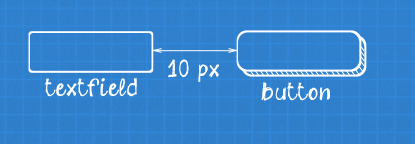
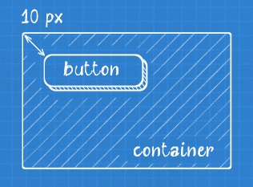
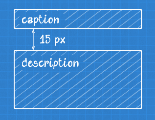
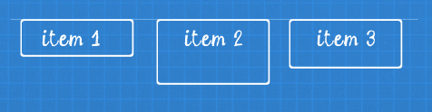
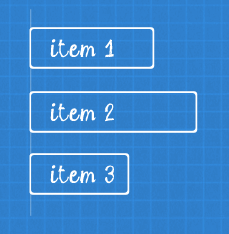
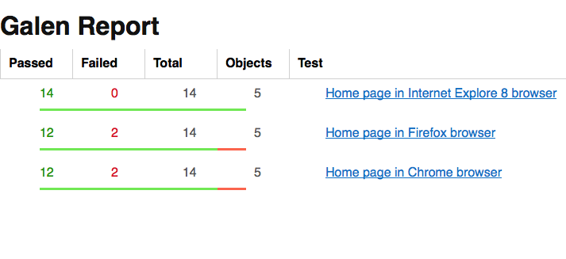
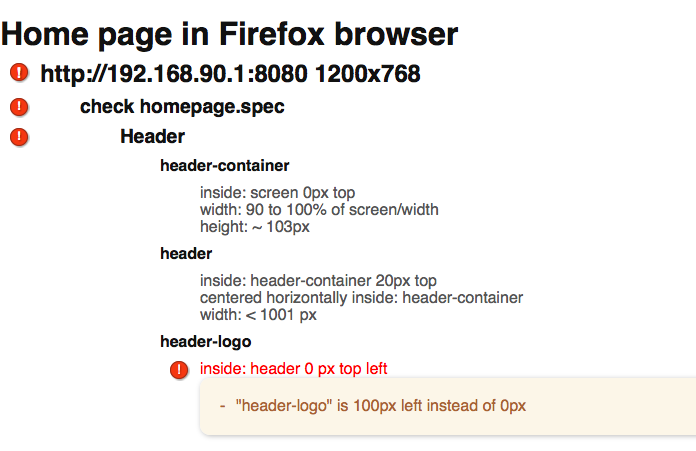
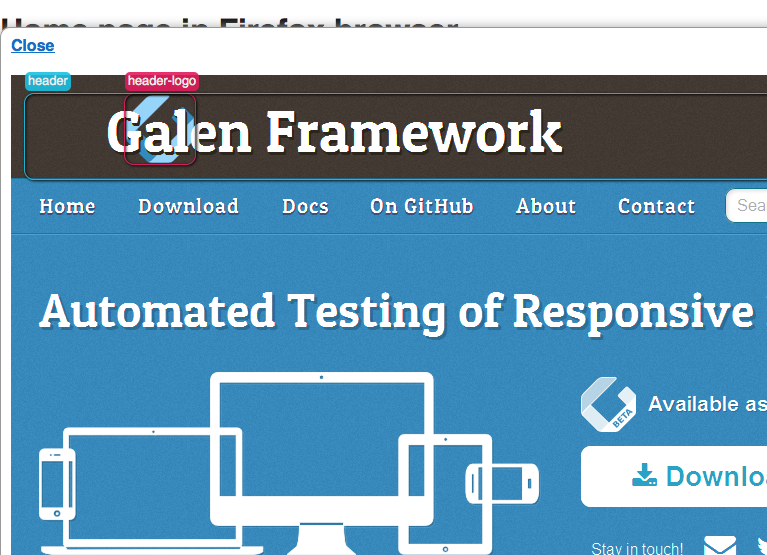

Galen Framework
Testing Responsive Layout Is Easy
by Ivan Shubin
The Problem

How do we implement and test responsive website?
Solution

1. Write Galen tests

2. Implement Frontend and execute tests

3. Get feedback
What is Galen?
Galen is a framework with special language for testing page layout in a real browser.
How Galen does it?
By checking objects locations relatively to each other
Near

button near: textfield 10px right
Inside

button inside: container 10px top left
Inside (a bit more complicated)

button inside: container 10px left right, 20px top bottom
Above / Below

caption above: description 15px# or like this description below: caption 15px
Aligned

menu-item-* aligned horizontally top: menu-item-1 10px
Aligned Vertically

menu-item-* aligned vertically left: menu-item-1 10px
All checks
- absent
- near
- above
- below
- inside
- aligned
- centered
- color scheme
- component
- text is
- text starts
- text ends
- text matches
- text contains
- on
- width
- height
- contains
Values
Exact values
width: 100px
Greater than / Less than
width: > 100px height: < 100px
Simple range
width: 100 to 150px
Approximate values
width: ~ 100px
Relative values
width: 70% of screen/width
Combined ranges
width: > 50 % of screen/width height: 50 to 60 % of screen/height
Real life example
Requirement
Comments sections should stretch on mobile and tablet devices but on desktop it should have fixed width of 800px
Solution
=============================================== main id main-container comments css div.comments =============================================== @ mobile, tablet comments width: 100% of main/width @ desktop comments width: 800px
How do we run it?
$ galen check homepage.spec --url "http://example.com" --size "400x600" --include "mobile" --htmlreport "reports-dir"
Defining a Test Suite
Simple example
Home page on mobile device
http://galenframework.com 400x800
check homepage.spec --include "mobile"
Advanced Test Suite
@@ Set domain galenframework.com @@ Table devices | deviceName | tags | size | | Mobile | mobile | 320x600 | | Tablet | tablet | 640x480 | | Desktop | desktop | 1024x800 | @@ Parameterized using devices Home page on ${deviceName} device http://${domain}/ ${size}
Reports
Reports
Reports
Any questions
?
For more information visit GalenFramework.com project website or GitHub project page. Also there are many detailed articles about Galen Framework on MindEngine.net